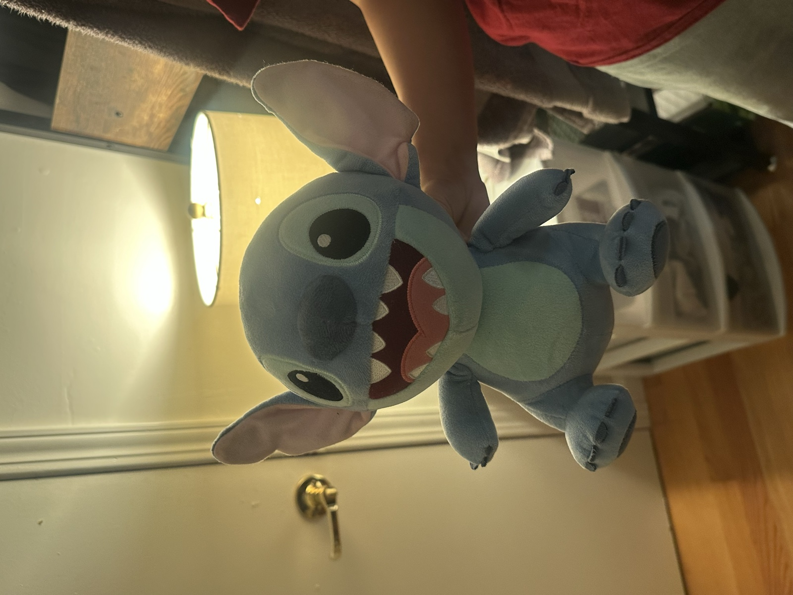
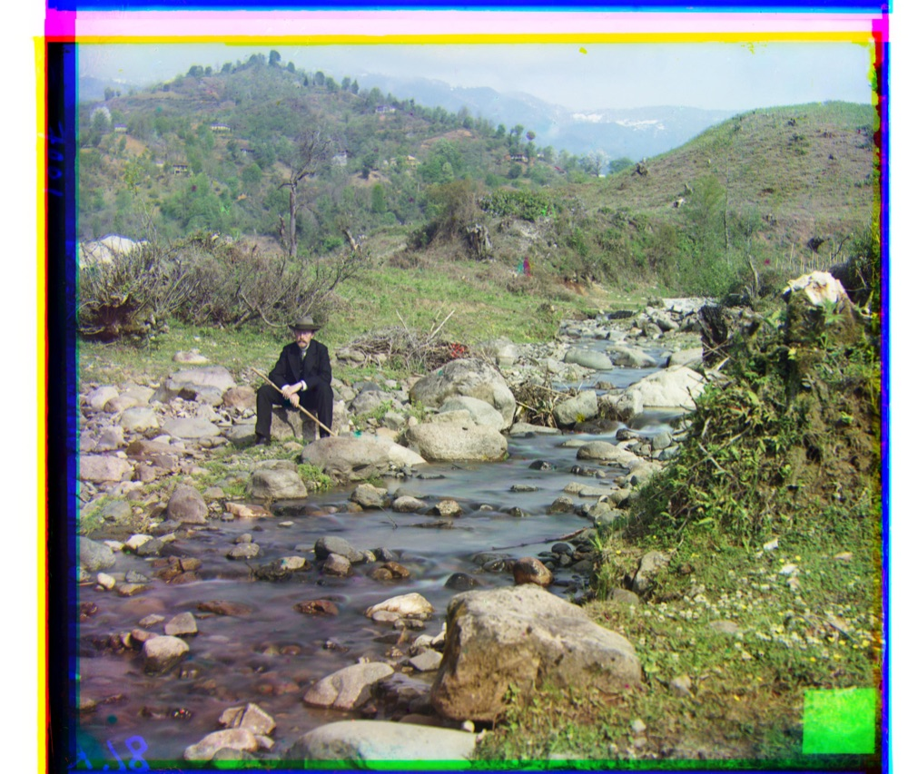
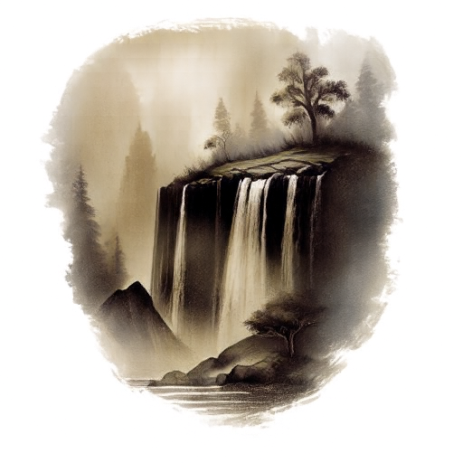

Becoming Friends with Your Camera
Selfies, an atrium, and a Stitch plush toy... seeing how perspective, focal length, and camera distance shape a photo!
Keagan Aromin • Fall 2026

Selfies, an atrium, and a Stitch plush toy... seeing how perspective, focal length, and camera distance shape a photo!

Colorizing Sergei Prokudin-Gorskii's century-old glass plate negatives by aligning their red, green, and blue exposures with NCC and an image pyramid!

Convolution from scratch, edges from derivative filters, then splitting images into low and high frequencies to sharpen photos, build hybrid images, and blend an apple into an orange!

Denoising and generating images with a pretrained flow model, using the same sampler to edit photos and make visual anagrams and hybrid images, then training my own flow matching UNets to generate MNIST digits!

In this project we learned how to stitch panoramas together using homographies!